Destinazione del TFR: la scelta tra azienda e previdenza complementare
La destinazione del trattamento di fine rapporto è una delle prime decisioni che il lavoratore assume all'atto dell'assunzione: mantenerlo in azienda o conferirlo alla previdenza c…
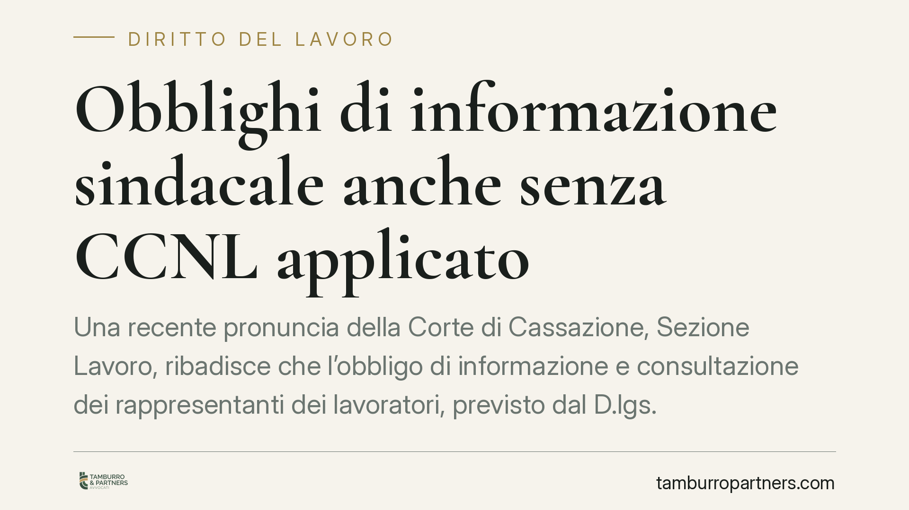
Obblighi di informazione sindacale anche senza CCNL applicato
Una recente pronuncia della Corte di Cassazione, Sezione Lavoro, ribadisce che l'obbligo di informazione e consultazione dei rappresentanti dei lavoratori, previsto dal D.lgs. 25/2…
Sanzioni tributarie e lex mitior: la Lombardia disapplica il blocco retroattivo
La Corte di Giustizia Tributaria di secondo grado della Lombardia (sent. 1616/2026) disapplica il blocco temporale dell'art. 5 del d.lgs. 87/2024 e applica la sanzione più mite del…
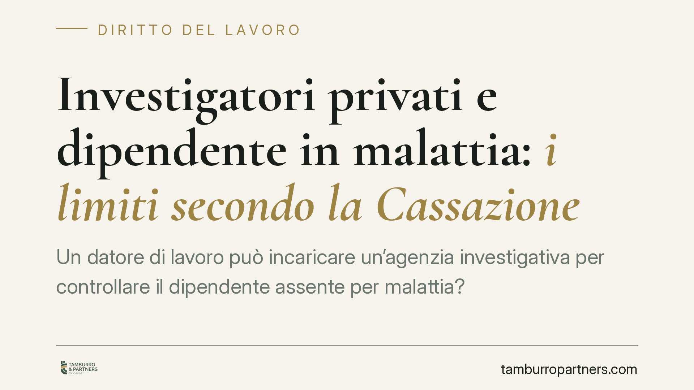
Investigatori privati e dipendente in malattia: i limiti secondo la Cassazione
Un datore di lavoro può incaricare un'agenzia investigativa per controllare il dipendente assente per malattia? La Corte di Cassazione è tornata sul tema, distinguendo tra osservaz…
Errore sul regime IVA e reato fiscale: quando manca il dolo di frode
Applicare l'IVA ordinaria dove serviva il reverse charge non trasforma un'impresa in evasore fraudolento. Quando l'operazione commerciale è reale e documentata, l'errore di regime …
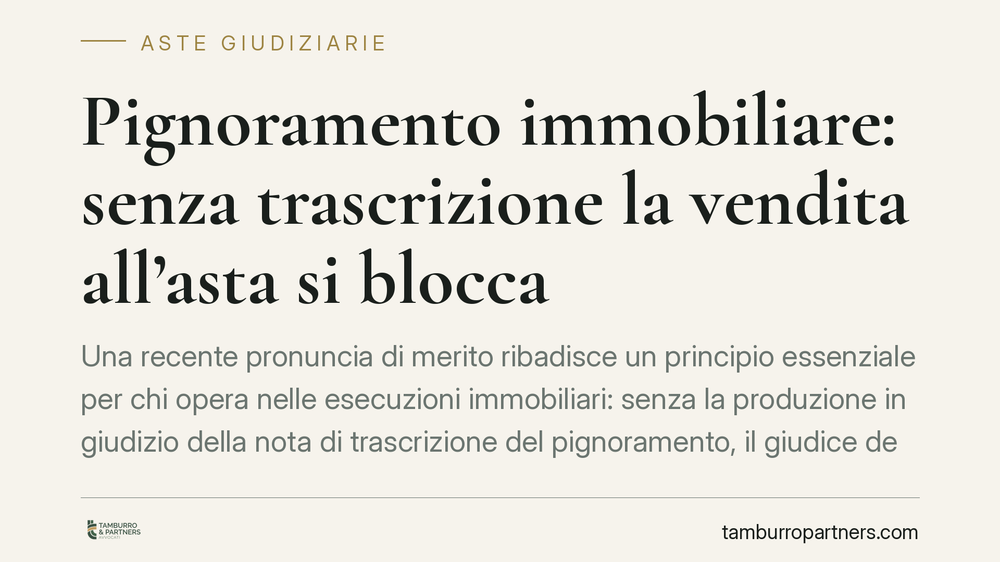
Pignoramento immobiliare: senza trascrizione la vendita all'asta si blocca
Una recente pronuncia di merito ribadisce un principio essenziale per chi opera nelle esecuzioni immobiliari: senza la produzione in giudizio della nota di trascrizione del pignora…
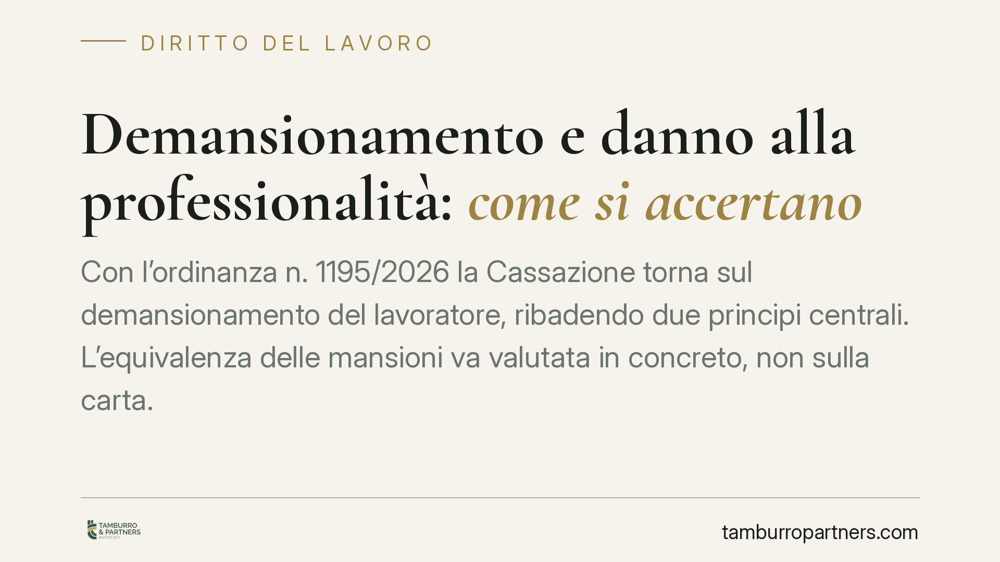
Demansionamento e danno alla professionalità: come si accertano
Con l'ordinanza n. 1195/2026 la Cassazione torna sul demansionamento del lavoratore, ribadendo due principi centrali. L'equivalenza delle mansioni va valutata in concreto, non sull…
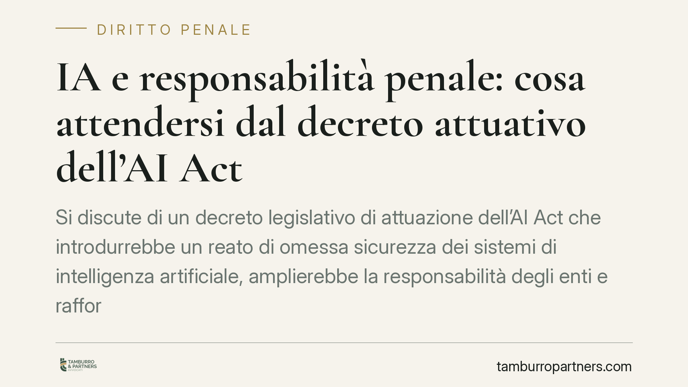
IA e responsabilità penale: cosa attendersi dal decreto attuativo dell'AI Act
Si discute di un decreto legislativo di attuazione dell'AI Act che introdurrebbe un reato di omessa sicurezza dei sistemi di intelligenza artificiale, amplierebbe la responsabilità…
Ferie non godute dei docenti precari: quando spetta l'indennità sostitutiva
Una recente pronuncia di merito ha riconosciuto a un docente precario il diritto all'indennità sostitutiva per le ferie maturate e non godute, addossando all'amministrazione l'oner…
Come sapere se ho una denuncia a mio carico
Il dubbio di essere finiti in un'indagine è frequente. La legge consente di chiedere alla Procura se risulta un'iscrizione a proprio carico nel registro delle notizie di reato, tra…
Intercettazioni WhatsApp: quando l'autorità può leggere le tue chat
Le conversazioni WhatsApp possono finire in un fascicolo penale, ma non in qualsiasi modo. La legge distingue tra l'intercettazione del flusso comunicativo in tempo reale e l'acqui…
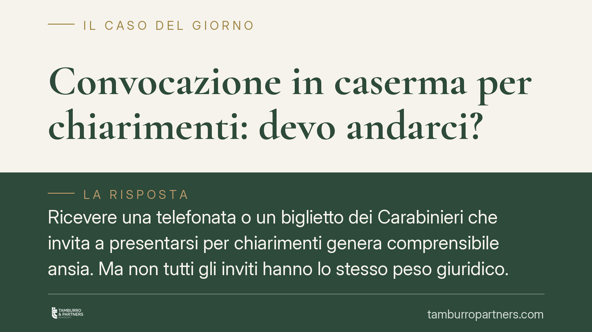
Convocazione in caserma per chiarimenti: devo andarci?
Ricevere una telefonata o un biglietto dei Carabinieri che invita a "presentarsi per chiarimenti" genera comprensibile ansia. Ma non tutti gli inviti hanno lo stesso peso giuridico…
Cancellare messaggi WhatsApp prima di una denuncia: quali rischi
Molti, temendo una denuncia o già coinvolti in una controversia, si chiedono se eliminare le chat WhatsApp possa costituire reato. La risposta è più sfumata di quanto si pensi: rar…
Saldo e stralcio: la banca può dire no anche se non hai nulla?
Chi non riesce a pagare un debito spesso propone alla banca un saldo e stralcio: una somma ridotta a chiusura di tutto. Ma la banca può rifiutare, anche se il debitore non possiede…
Casa all'asta: si può ancora trovare un accordo con la banca?
Quando l'abitazione finisce in asta giudiziaria, il debitore non è privo di margini di manovra. Prima e talvolta durante la procedura restano praticabili accordi con la banca, vend…
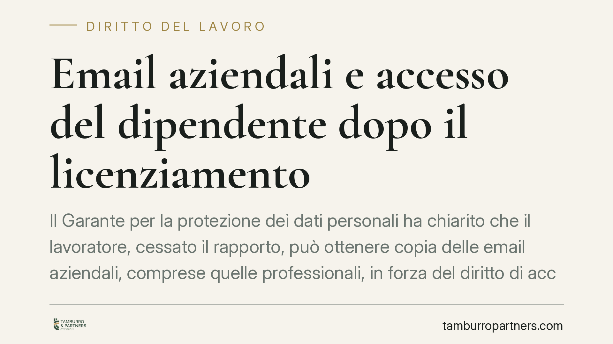
Email aziendali e accesso del dipendente dopo il licenziamento
Il Garante per la protezione dei dati personali ha chiarito che il lavoratore, cessato il rapporto, può ottenere copia delle email aziendali, comprese quelle professionali, in forz…
Pignoramento del conto con assegni familiari e indennità: i limiti
Un creditore può aggredire il conto corrente dove arrivano stipendio, assegni familiari o indennità di disoccupazione? La legge pone limiti precisi a tutela del minimo vitale, dist…
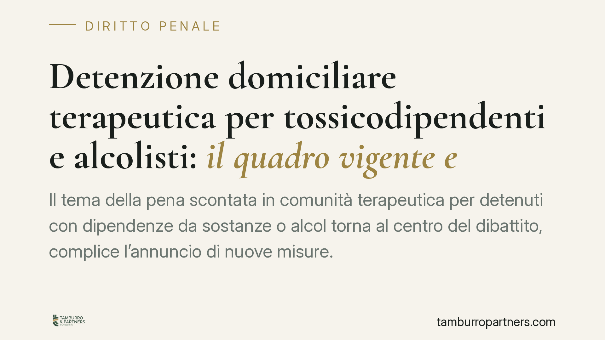
Detenzione domiciliare terapeutica per tossicodipendenti e alcolisti: il quadro vigente e le prospettive di riforma
Il tema della pena scontata in comunità terapeutica per detenuti con dipendenze da sostanze o alcol torna al centro del dibattito, complice l'annuncio di nuove misure. È l'occasion…
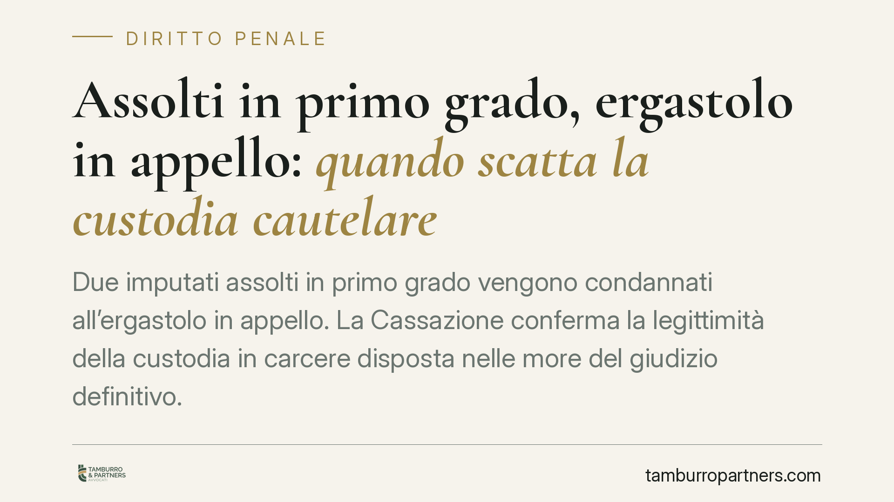
Assolti in primo grado, ergastolo in appello: quando scatta la custodia cautelare
Due imputati assolti in primo grado vengono condannati all'ergastolo in appello. La Cassazione conferma la legittimità della custodia in carcere disposta nelle more del giudizio de…
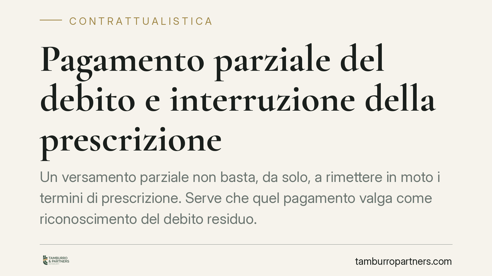
Pagamento parziale del debito e interruzione della prescrizione
Un versamento parziale non basta, da solo, a rimettere in moto i termini di prescrizione. Serve che quel pagamento valga come riconoscimento del debito residuo. La giurisprudenza r…
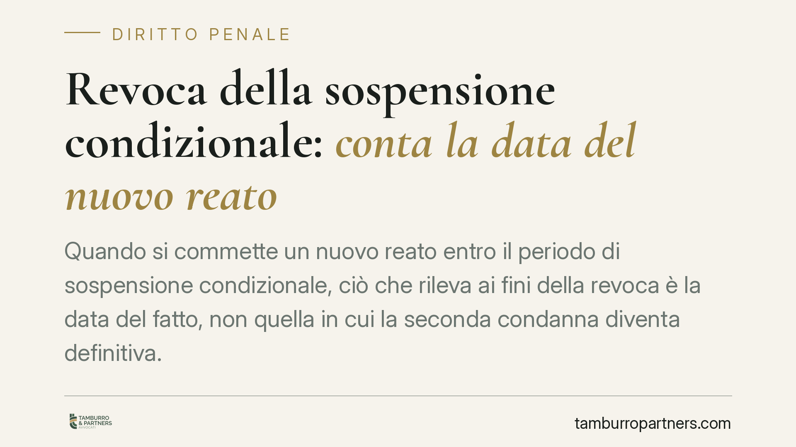
Revoca della sospensione condizionale: conta la data del nuovo reato
Quando si commette un nuovo reato entro il periodo di sospensione condizionale, ciò che rileva ai fini della revoca è la data del fatto, non quella in cui la seconda condanna diven…
Discriminazione sul lavoro: come provarla e l'onere della prova alleggerito
Dimostrare una discriminazione sul lavoro è difficile: raramente il datore la mette per iscritto. La legge lo sa e, per la discriminazione di genere, alleggerisce l'onere probatori…
Sanzioni INPS ridotte per contributi incerti: conta il pagamento nei termini
Quando i contributi dovuti sono oggettivamente incerti, l'azienda può contare su un regime attenuato delle sanzioni INPS. Ma il beneficio non è automatico: secondo un recente orien…
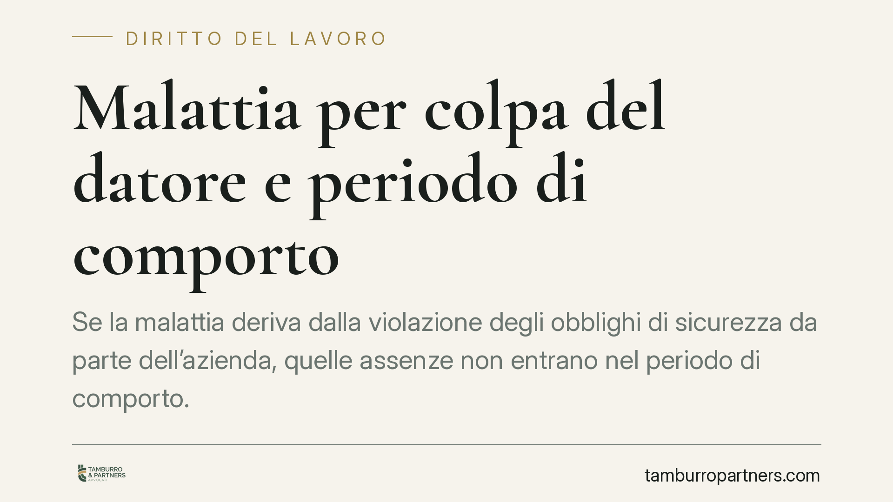
Malattia per colpa del datore e periodo di comporto
Se la malattia deriva dalla violazione degli obblighi di sicurezza da parte dell'azienda, quelle assenze non entrano nel periodo di comporto. La Sezione Lavoro della Cassazione lo …
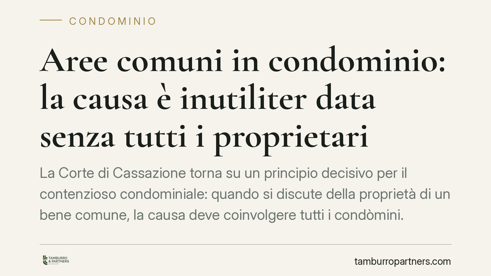
Aree comuni in condominio: la causa è inutiliter data senza tutti i proprietari
La Corte di Cassazione torna su un principio decisivo per il contenzioso condominiale: quando si discute della proprietà di un bene comune, la causa deve coinvolgere tutti i condòm…

Sostituzione dell'amministratore di sostegno: senza il beneficiario è nulla
La Cassazione ha ribadito un principio a tutela delle persone fragili: la sostituzione dell'amministratore di sostegno non può avvenire senza la partecipazione e l'ascolto del bene…

Preliminare di compravendita e agibilità mancante: quando il promissario acquirente può liberarsi
L'assenza del certificato di agibilità incide sul preliminare di compravendita immobiliare. Il promissario acquirente non è sempre obbligato a stipulare il rogito se l'immobile non…

Licenziamento economico senza crisi aziendale: cosa dice la Cassazione
Il licenziamento per motivi economici non presuppone necessariamente una crisi dell'impresa. Lo ribadisce la Cassazione: bastano ragioni organizzative effettive e verificabili, uni…

Imputazione dei pagamenti: chi prova a quale debito si riferisce il versamento
Quando un debitore ha più debiti verso lo stesso creditore, stabilire quale venga estinto con un pagamento non è un dettaglio: incide su interessi, garanzie e prescrizione. La Cass…

Accordi tra coniugi sulla futura crisi: quali sono validi
Possono i coniugi decidere oggi come regolare patrimonio e rapporti con i figli in caso di futura separazione o divorzio? Il tema è tornato al centro del dibattito. La linea di fon…